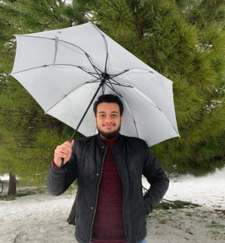

Omar AlAjoulen

Personal Information:
- Date of Birth: 28/8/1999
- Nationality: Jordanian
- Place of Residence: Madaba, Jordan
- Married Statues: Single
- Hobbies: Football, Exercising and Video games.
My Profile
An ambitious civil engineer who graduated with 8 months of training experience at an engineering
office, it included site supervision and design sections. I have a very good English level as a second
language, I am passionate about obtaining career knowledge and experiences and seeking for self-
development.
My Education
Al Hussein Technical University | Amman, Jordan (Mar 2018 - June 2023)
BSc Civil Engineering
Cumulative Rate: 2.91 (Good)
University Achievements:
- Getting a job opportunity as a site supervisor in the 8 months training period due to being disciplined in work and achieving required tasks.
- Implementing different structural modelling using relevant software’s.
- Implementing a green design concept in a school building in cooperation with 2 colleges.
- Implementing different structural modelling using relevant software’s
- Working on different civil engineering projects from scratch in a productive and collaborative environment with taken into consideration health and safety regulations.
- Improving English and Arabic presentation skills.
My Skills
- Languages: Arabic (Native Language), English (Very good)
- Computer Related Skills: Proficient in using different computer programmes and internet websites
- Communication Skills: Very good ability in working with others and seeking to be productive.
- Time Management Skills: Arranging required tasks to be submitted on time professionally.
Contact Me